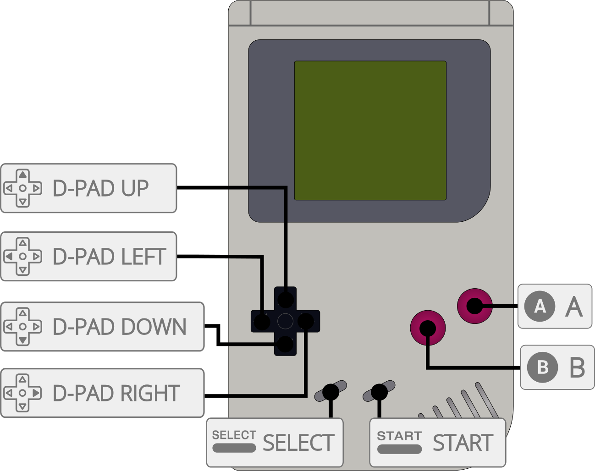

SameBoy is an extremely accurate open source Gameboy (DMG) and Gameboy Color (CGB) emulator, written in portable C.
The SameBoy core has been authored by
The SameBoy core is licensed under
A summary of the licenses behind RetroArch and its cores can be found here.
Content that can be loaded by the SameBoy core have the following file extensions:
RetroArch database(s) that are associated with the SameBoy core:
Required or optional firmware files go in the frontend's system directory.
!!! attention The SameBoy core has reverse engineered Game Boy/Game Boy Color boot ROMs baked into the core itself so real BIOS files aren't required. If you’d like to override this, you can place the following BIOS files in RetroArch's system directory.
| Filename | Description | md5sum |
|---|---|---|
| dmg_boot.bin | Game Boy boot ROM - Optional | 32fbbd84168d3482956eb3c5051637f5 |
| cgb_boot.bin | Game Boy Color boot ROM - Optional | dbfce9db9deaa2567f6a84fde55f9680 |
Frontend-level settings or features that the SameBoy core respects.
| Feature | Supported |
|---|---|
| Restart | ✔ |
| Screenshots | ✔ |
| Saves | ✔ |
| States | ✔ |
| Rewind | ✔ |
| Netplay | ✔ |
| Core Options | ✔ |
| RetroAchievements | ✔ |
| RetroArch Cheats | ✕ |
| Native Cheats | ✕ |
| Controls | ✔ |
| Remapping | ✔ |
| Multi-Mouse | ✕ |
| Rumble | ✔ |
| Sensors | ✕ |
| Camera | ✕ |
| Location | ✕ |
| Subsystem | ✔ |
| Softpatching | ✕ |
| Disk Control | ✕ |
| Username | ✕ |
| Language | ✕ |
| Crop Overscan | ✕ |
| LEDs | ✕ |
The SameBoy core's internal core name is 'SameBoy'
The SameBoy core saves/loads to/from these directories.
Frontend's Save directory
Frontend's State directory
Link cable emulation is supported in single-cart mode and in dual-cart mode. To use it in single-cart mode enable the Single cart dual mode option under options and reload the content
!!! note The savefile for the second slot in this mode will be named 'gamename.srm.2'
To use it in dual-cart mode you have to load content via the Subsystem API which you can achieve via the GUI or via CLI
Load content via Subsystem API from GUI
First, we load the first GameBoy ROM through '2 Player Game Boy Link' in RetroArch's Main Menu.

Next, we load our Super GameBoy ROM through 'Load Super GameBoy' in RetroArch's Menu Menu.


Then, we start the content by selecting 'Start GameBoy' In RetroArch's Menu Menu.
!!! warning You have to load any game in the core for the '2 Player Game Boy Link' entries to show up, this is a RetroArch limitation, not a core limitation
!!! warning While loading the same game in this mode should work some users reported issues while linking them, you should use single cart mode for that scenario
Load Content via Subsystem API from CLI
retroarch -L {path to sameboy core} {path to first GameBoy ROM} --subsystem gb_link_2p {path to second GameBoy ROM}
The SameBoy core has the following option(s) that can be tweaked from the core options menu. The default setting is bolded.
Settings with (Restart) means that core has to be closed for the new setting to be applied on next launch.
Single cart dual mode (reload) [sameboy_dual] (disabled|enabled)
Emulate two Game Boy games at the same time.
Color correction [sameboy_color_correction_mode] (off|correct curves|emulate hardware|preserve brightness)
Only for Gameboy Color games.
Select color correction.
??? note "Color Correction - off"

??? note "Color Correction - correct curves"

??? note "Color Correction - emulate hardware"

??? note "Color Correction - preserve brightness"

High-pass filter [sameboy_high_pass_filter_mode] (off|accurate|remove dc offset)
Awaiting description.
Emulated model [sameboy_model] (Game Boy Color|Game Boy Advance|Auto|Game Boy)
Select what console/model the content is being ran on. May activate special in-game content.
Single cart dual mode (reload) [sameboy_dual] (disabled|enabled)
Emulate two Game Boy games at the same time.
This core option is enabled by default and is hidden from view when the 2 Player Game Boy Link Subsystem API is used.
Link cable emulation [sameboy_link] (enabled|disabled)
Enable in-game Game Boy link cable functions.
Screen layout [sameboy_screen_layout] (top-down|left-right)
Configure the layout of the two emulated Game Boys.
Audio output [sameboy_audio_output] (Game Boy #1|Game Boy #2)
Select which Game Boy will output audio.
Emulated model for Game Boy #1 [sameboy_model_1] (Game Boy Color|Game Boy Advance|Auto|Game Boy)
Select what console/model the content is being ran on for Game Boy #1.
May activate special in-game content.
Emulated model for Game Boy #2 [sameboy_model_2] (Game Boy Color|Game Boy Advance|Auto|Game Boy)
Select what console/model the content is being ran on for Game Boy #2.
May activate special in-game content.
Color correction for Game Boy #1 [sameboy_color_correction_mode_1] (off|correct curves|emulate hardware|preserve brightness)
Only for Gameboy Color games.
Select color correction for Game Boy #1.
Color correction for Game Boy #2 [sameboy_color_correction_mode_2] (off|correct curves|emulate hardware|preserve brightness)
Only for Gameboy Color games.
Select color correction for Game Boy #2.
High-pass filter for Game Boy #1 [sameboy_high_pass_filter_mode_1] (off|accurate|remove dc offset)
Awaiting description.
High-pass filter for Game Boy #2 [sameboy_high_pass_filter_mode_2] (off|accurate|remove dc offset)
Awaiting description.
The SameBoy core supports the following device type(s) in the controls menu, bolded device types are the default for the specified user(s):
Rumble only works in the SameBoy core when

| User 1 - 2 Remap descriptors | RetroPad Inputs |
|---|---|
| B |  |
| Select |  |
| Start |  |
| Up |  |
| Down |  |
| Left |  |
| Right |  |
| A |  |